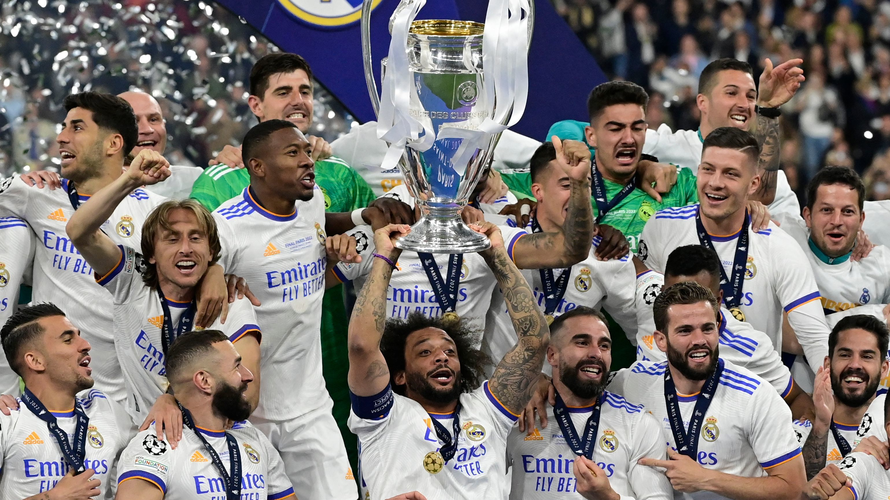

Kraljevski fudbalski klub Madrid, poznatiji kao Real Madrid je španski fudbalski klub, najuspešniji fudbalski klub na svetu u 20. veku. Osnovan je 6. marta 1902. Nastupa u Prvoj ligi Španije od formiranja lige 1928. do danas bez ispadanja u niži rang takmičenja. Ime kluba je bilo Madrid Club de Fútbol, ali klubu je dozvoljeno da koristi naziv Real (kraljevski) nakon što je kralj Alfonso XIII dao klubu zvanični blagoslov u junu 1920. godine. U Drugoj španskoj republici je kruna sa grba i naziv Real uklonjena, pa je klub od 1931. godine nosio stari naziv. Posle pobede Nacionalista u Španskom građanskom ratu je 1939. ponovo vraćena kruna na grbu, i naziv Real.

Stadion Santijago Bernabeu (šp. Estadio Santiago Bernabéu) je fudbalski stadion u Španiji i smešten je u glavnom gradu Španije, Madridu. Domaćin stadiona je poznati evropski klub Real Madrid. Stadion Santijago Bernabeu jedan je od 29 stadiona u Evropi koji su uvršteni na spisak organizacije UEFA stadiona sa 5 zvezdica.
Stadion je jedan od najpopularnijih stadiona na svetu, pored, na primer, stadiona Kamp Nou u Barseloni, Old Traforda u Mančesteru, Vemblija u Londonu, Juventus stadium u Torino,Stadion Đuzepe Meaca u Milanu, Stadiona Totenhem Hotspura u Londonu i Marakane u Rio de Žaneiru.